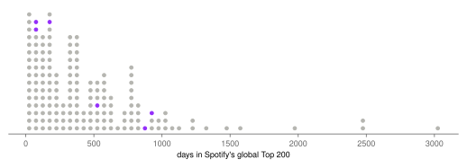
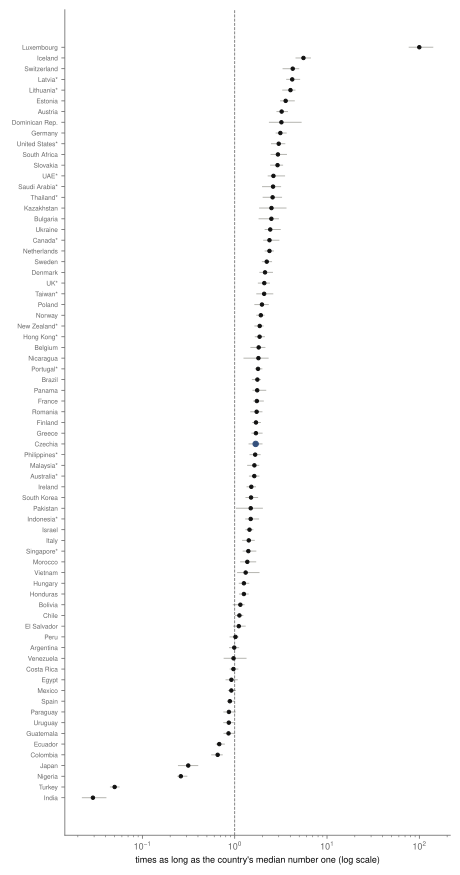
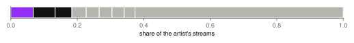
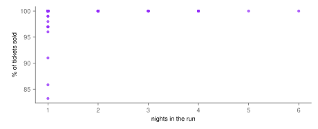
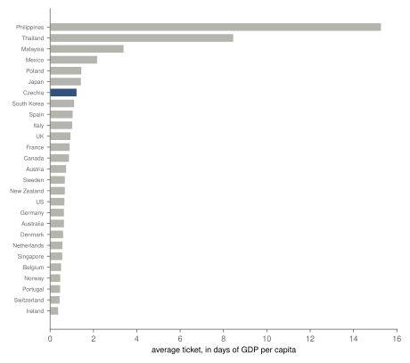

Research · Pop, measured, part 5 · Billie Eilish, 2017–2026
Billie Eilish, measured: two long hits, five years apart
Descriptive and pre-specified: BIRDS OF A FEATHER and bad guy each outlasted about five in six global number ones since 2017; her shows sold out, and at her one show in the Philippines a ticket cost 15.3 days of GDP per capita.
- global number ones that lasted longer than BIRDS OF A FEATHER
- 15.8 % 95 % CI 9.8 % to 22.4 % · still charting, so at most
- BIRDS OF A FEATHER in Czechia, against the Czech median number one
- 1.7× 95 % CI 1.4–2.0 · 38th of 71
- songs that make up half her Spotify streams
- 14 administrative count (a full count, no sampling error) · of 79
- average ticket in Prague, 2025
- $120 1.2 days of Czech GDP per capita · administrative count
Overwhelmed? Here's the short version
- Her two longest-lasting number ones, from 2019 and 2024, are each among the most durable number ones of the streaming era.
- The 2024 song outlasted local hits in most countries, by most in Iceland, Switzerland and the Baltic states; in Czechia by a little less than the world's middle.
- Her listening sits between a single-hit artist and a fan-driven catalogue: 14 of 79 songs carry half of it.
- Her shows sold out (92 % of entries); by the rule set in advance, the data cannot say whether longer runs sold differently.
- At her one show in the Philippines a ticket cost 15.3 days of GDP per capita; in Prague about one day.
Photo: Trinity Kubassek · CC0, toned
This is the fifth and last artist part of Pop, measured, which asks five questions of five artists: how long the artist's biggest song lasted against every global number one, where it lasted longest, whether the listening is one song or many, whether longer runs in one venue sold less of their tickets, and what a ticket cost in days of local income. The questions draw on work on the life of chart songs1, on the shift of musicians' income to live shows2, on concert pricing3 and on streaming's effect on music sales4. Billie Eilish is the series' youngest artist and the only one whose whole career has happened on streaming: her first hits came in 2017, the year the daily chart data used here begin. That makes her the clearest case of the question at the heart of the series, how long a hit lasts when listening is counted every day, and she has two candidates for it, released five years apart.
Data
The data are the series' common collection, made once on 1 October 2026: for the global chart and 75 national Spotify charts, every song that has entered the Top 200 with its days, peak and total streams, and the artist's page with every song's streams5. By the series rule, the focal song is her song with the most global streams, BIRDS OF A FEATHER (2024); it peaked at number one. The reference set is the 164 global number ones whose first day in the chart can be seen, that is, those that first charted after the global chart began on 1 January 2017; 30 number ones already charting by then are left out.
For the tours, the Wikipedia articles on the When We All Fall Asleep Tour (2019), Happier Than Ever, The World Tour (2022–2023) and Hit Me Hard and Soft: The Tour (2024–2025) list Billboard's Boxscore figures, the tickets sold, capacity and gross that promoters report for each engagement6: 118 entries covering 181 shows, mostly in arenas. None of her entries covers several venues or counts online viewers. Income is the World Bank's GDP per capita in current dollars for the country and year7.
How this was done
The methods are those of the series, fixed on 1 October 2026, before this analysis was run; the author had worked with these data since March 2026. How long a song lasted is its total days in the global Top 200; songs still in the chart are treated as unfinished by the Kaplan–Meier estimator8, and a song's place is the share of number ones estimated to last longer, with a 95 % interval from 2 000 bootstrap resamples: the calculation repeated on 2 000 random redraws of the songs, to see how much it moves. For countries, the focal song's days in each national chart are divided by the median days of that country's own number ones; where the song is still in the chart the ratio is a lower bound. Runs are compared with the share of tickets sold by Spearman's correlation, which says whether entries with more nights tend to sell a higher or lower share, from −1 to 1, under the rule set in advance that if nine entries in ten sold out, the data show demand at or above capacity and the correlation is not read. Ticket prices are gross divided by tickets sold, then divided by a day of the host country's GDP per capita. All results are descriptive.
How long her hits lasted
By 1 October 2026, BIRDS OF A FEATHER had spent 867 days in the global Top 200 and was still in the chart. 15.8 % of number ones since 2017 are estimated to last longer than it has so far (95 % CI 9.8 % to 22.4 %), so it has outlasted about five in six. Her other number ones: bad guy, 949 days (15 % of number ones lasted longer); everything i wanted, 530 days (38 % of number ones lasted longer); LUNCH, 198 days (69 % of number ones lasted longer); No Time To Die, 88 days (83 % of number ones lasted longer); my future, 92 days (83 % of number ones lasted longer). bad guy, from 2019, ended its run at almost the same place on the curve as BIRDS OF A FEATHER stands now. Among the series' artists, she is the only one with two number ones that each outlasted about five in six of all the others.
The curve behind these numbers is steep at first and long at the end: half of all number ones had left the global chart by 373 days, 26 % were still in after two years and 14 % after a thousand days. Both of her long hits are in the long end, and BIRDS OF A FEATHER, still in the chart after more than two years, may yet pass bad guy. Her other number ones were shorter-lived than most: LUNCH, No Time To Die and my future were each outlasted by more than two thirds of number ones, which is what makes the two long ones stand out.

Where it lasted
BIRDS OF A FEATHER entered 71 national charts and outlasted the local median number one in 56 of them. Relative to local hits it stood out most in Iceland (5.6×), Switzerland (4.3×) and the three Baltic states, Latvia (4.2×), Lithuania (4.0×) and Estonia (3.6×), where local number ones are short-lived; Luxembourg tops the registered ranking at 100× for the reason given in part 1, a median number one of 7 days. By days alone, a ranking added after the part 1 results were seen, it lasted longest in Australia (868 days) and, a day behind, in seven countries: the United Arab Emirates, Hong Kong, Malaysia, Portugal, Saudi Arabia, Singapore and Taiwan (867), all charts where it is still in. By days alone, Iceland, Switzerland and the Baltic states rank between 16th and 28th: their high ratios come mostly from short local number ones. The pattern is close to Harry Styles's in part 1, whose biggest hit stood out in the same small European markets.
In Czechia it spent 727 days in the chart against 431 for the median Czech number one: 1.7 times as long (95 % CI 1.4–2.0), 38th of 71 countries, a little below the middle; by days alone (the ranking added after the results) Czechia is 30th. Slovakia, at 2.9×, and Poland, at 2.0×, kept it longer relative to their own hits. It lasted less than the local median number one in 15 countries, among them Japan (0.31×), where number ones last a median of 678.5 days, and Nigeria (0.26×); it barely entered the charts of Turkey and India.
The series fixed in advance that each part would report Czechia's place, so that the five can be set side by side. Measured against the median Czech number one, Czech listeners kept Harry Styles's biggest song 2.06 times as long (35th of 72 countries), Taylor Swift's 1.03 times (35th of 68), BTS's 0.60 times (60th of 72), Bad Bunny's 0.24 times (49th of 65) and Billie Eilish's 1.69 times (38th of 71). Side by side, the five places put Czechia near the middle for the three English-language songs and well below it for the Korean and the Spanish-language one. That is a description of five songs, one per artist, with no test across them; it cannot separate language from the artist or the song.

BIRDS OF A FEATHER outlasted the local median number one in 56 of 71 countries; in Czechia 1.7×, 38th of 71.

One song or a catalogue
Kworb lists 79 songs on her Spotify page. BIRDS OF A FEATHER holds 7 % of her streams; lovely (with Khalid) and bad guy follow, and the top three together hold 18 %. Half of all her streams come from 14 songs, and 34 songs each hold one percent or more. The Gini coefficient over songs is 0.52, where 0 would mean every song streamed equally and 1 that one song took everything. That places her between the series' other artists: Harry Styles's half came from six songs, BTS's from 41 and Bad Bunny's from 46. Half of her listening rests on 14 songs, not on one.
Half of her listening rests on 14 songs, not on one: BIRDS OF A FEATHER is 7 %.

How many nights a city can fill
Her three tours, Happier Than Ever, The World Tour, Hit Me Hard and Soft: The Tour and When We All Fall Asleep Tour, played 181 shows in 118 Boxscore entries. The longest run was 6 nights at The O2 Arena in London. 92 % of entries sold 99.5 % of their tickets or more, which crosses the threshold set in advance: demand was at or above capacity nearly everywhere, and the data cannot say how far above. The correlation between nights and the share sold is 0.21 (95 % CI 0.14 to 0.27); under the registered rule it is reported and not read, because with nine entries in ten at capacity it rests on the few that were not. All ten entries below 99.5 % were one-night shows, seven of them on the 2019 tour, which had no multi-night runs. The lowest share, 83 %, was in Kuala Lumpur on Happier Than Ever, The World Tour in 2022. The median entry grossed 1.86 million dollars a night.
Gross divided by tickets sold rose with each tour, from 59 dollars a ticket on the When We All Fall Asleep Tour in 2019 to 114 on Happier Than Ever and 149 on Hit Me Hard and Soft, in dollars of each year, not adjusted for inflation; the tickets still sold out.
92 % of entries sold out; all ten that did not were one-night shows.

What a ticket cost, in days of income
Dividing each entry's gross by its tickets sold gives the average price paid, every seat price and fee together, converted at the exchange rate used when the gross was reported. Across 27 countries, the average ticket cost 15.3 days of the local GDP per capita in the Philippines (148 dollars), the highest figure in the series, and 8.5 in Thailand; each of the two rests on a single 2022 show. Malaysia followed at 3.4 and Mexico at 2.2. At the other end, in Ireland, the average ticket of 121 dollars was 0.37 of a day. In 4 countries a ticket cost more than two days of income, all of them in South-East Asia or Latin America; in 17 it cost less than one. By country, the average ticket ranged from 30 dollars in Portugal, on her first tour, to 160 in Thailand: a ratio of 5.4, against about 41-fold in days of income.
She played Prague at the O2 Arena on 1 June 2025: 20 209 tickets sold and 2 420 530 dollars gross, an average of 120 dollars, 1.2 days of Czech income. That is more, relative to income, than in any western European country she played and less than in Poland (1.4). Harry Styles's Prague show of 2022, in part 1, cost an average of 69 dollars, 0.88 of a day of that year's Czech income: in three years and one artist later, the same hall charged a Czech fan noticeably more of a day's income. Two shows are not a trend, and the artists differ, but the direction matches the rise in her own prices from tour to tour. GDP per capita is not a fan's income, and the people at an arena show earn more than the average; the figure shows what the price was set against rather than what each fan felt.

What changed after registration
- 2 October 2026: two data definitions were added to the series design after the results of parts 2–5 were first computed, one for attendance figures that cover several venues and one for entries that count online viewers. Neither applies to any Billie Eilish entry.
- 1 October 2026, after the part 1 results were seen: countries are also ranked by days alone, as in part 1, because small markets with many one-day number ones inflate the ratio. This ranking is labelled as added after the results where it is used.
What this means
Measured: two of Billie Eilish's songs, five years apart, each outlasted about five in six global number ones, and the newer one is still in the chart. It outlasted local hits in most countries, by most in small European markets, and in Czechia a little less than the world's middle. Half of her listening is carried by 14 songs rather than one or hundreds. Her shows sold out, and a ticket at her one show in the Philippines cost more than two weeks of that country's GDP per capita. She is the only artist in the series with two global number ones that each outlasted about five in six of the others; that is two songs, not a measured pattern.
What this does not show
Spotify is one service among several. Days in the chart are not days in a row, and the countries' charts started at different dates; where the song is still in the chart, its days and ratios are lower bounds. Nothing here says why a song lasted, and the Bond theme and album singles were released in different ways from the long hits. A sold-out show hides how many more wanted tickets. GDP per capita is a rough stand-in for what fans earn, and in countries where incomes are spread widely, such as the Philippines, the people at an arena earn well above the average, so the gap between countries overstates what fans at the shows felt.
Reproduction
Every number on this page is filled in from assets/pop/billie-eilish/results.json by a script. From the repository root: tools/pop/collect.py and collect_extra.py collect the raw files; parse.py billie-eilish, analyse.py billie-eilish, figures.py billie-eilish and article.py billie-eilish build the tables, estimates, figures and this page. The design is docs/research/pop-measured-design.md.
References
- Bradlow, E. T., Fader, P. S. (2001). A Bayesian lifetime model for the "Hot 100" Billboard songs. Journal of the American Statistical Association 96(454), 368–381. doi:10.1198/016214501753168091. Accessed 2 October 2026.
- Connolly, M., Krueger, A. B. (2006). Rockonomics: the economics of popular music. In Handbook of the Economics of Art and Culture, vol. 1, 667–719. Elsevier. doi:10.1016/S1574-0676(06)01020-9. Accessed 2 October 2026.
- Courty, P., Pagliero, M. (2014). The pricing of art and the art of pricing: pricing styles in the concert industry. In Handbook of the Economics of Art and Culture, vol. 2, 299–356. Elsevier. doi:10.1016/B978-0-444-53776-8.00013-1. Accessed 2 October 2026.
- Aguiar, L., Waldfogel, J. (2018). As streaming reaches flood stage, does it stimulate or depress music sales? International Journal of Industrial Organization 57, 278–307. doi:10.1016/j.ijindorg.2017.06.004. Accessed 2 October 2026.
- kworb.net (2026). Spotify charts: daily totals for the global and national charts, current daily charts, track pages and artist song lists. kworb.net/spotify. Accessed 1 October 2026.
- Wikipedia contributors (2026). When We All Fall Asleep Tour, revision 1354139106; Happier Than Ever, The World Tour, revision 1368347831; Hit Me Hard and Soft: The Tour, revision 1376116789; Boxscore figures as cited there. When We All Fall Asleep Tour, Happier Than Ever, The World Tour, Hit Me Hard and Soft: The Tour. Accessed 1 October 2026.
- World Bank (2026). GDP per capita, current US$ (NY.GDP.PCAP.CD), 2016–2025. data.worldbank.org. Accessed 1 October 2026.
- Kaplan, E. L., Meier, P. (1958). Nonparametric estimation from incomplete observations. Journal of the American Statistical Association 53(282), 457–481. doi:10.1080/01621459.1958.10501452. Accessed 2 October 2026.